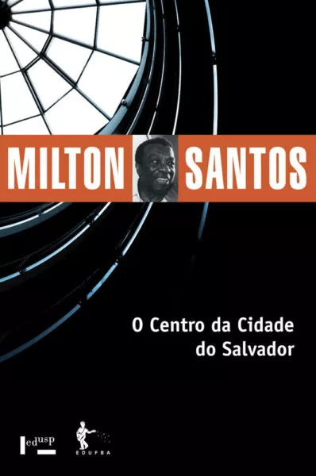
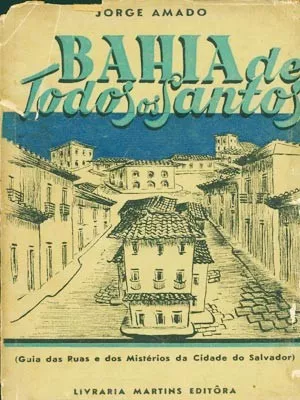
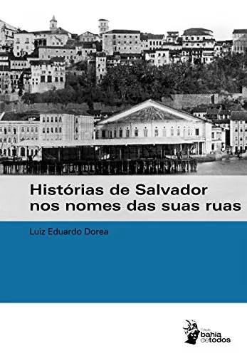

5 livros históricos sobre Salvador
que você pode ler de graça
Blog
1- O Centro da Cidade Salvador, de Milton Santos
A obra “O Centro da Cidade do Salvador”, escrita por Milton Santos, um clássico da Geografia, foi apresentada à Universidade de Strasbourg, em 1958, como tese de doutorado do professor. Nela, Santos mostra a Geografia como uma ciência que, além de espacial, também é temporal. O livro traz uma rica associação entre as histórias de Salvador e os eventos da década de 1950, além de explicar as múltiplas funções numa cidade em processo acelerado de transformação. O autor analisa a paisagem da capital baiana a partir da interação entre o sítio da cidade, o ambiente construído e as dinâmicas sociais, e revela as desigualdades na apropriação do espaço soteropolitano pelas diferentes classes sociais. O livro tornou-se um marco do início da renovação dos estudos geográficos, que passaram a incorporar as relações sociais como componentes indissociáveis do meio físico. Milton Santos também expande sua análise ao Recôncavo Baiano e ao estado da Bahia, bem como busca as escalas nacional e mundial, descrevendo os fenômenos da urbanização e metropolização. Link para ler.
2- Bahia de Todos os Santos – Guia das Ruas e dos Mistérios da Cidade do Salvador, de Jorge Amado
“A Bahia te espera para sua festa mais quotidiana. Teus olhos se encharcarão de pitoresco, mas se entristecerão também ante a miséria que sobra nestas ruas coloniais onde começam a subir, magros e feios, os arranha-céus modernos.” O trecho acima, do livro “Bahia de Todos os Santos – Guia das Ruas e dos Mistérios da Cidade do Salvador”, convida o leitor a conhecer a capital baiana, compreender belezas e contrastes da cidade e se apaixonar pela ”cidade da Bahia”. Na publicação, Jorge Amado, um dos responsáveis por projetar belezas e mistérios do povo baiano para o mundo, mostra ao leitor um pouco das ruas, costumes, segredos, personalidades, gastronomia, religião, festas, praias, entre outros aspectos e locais pertencentes à cidade e ao povo. Com requinte e simplicidade do autor, “Bahia de Todos os Santos” é um roteiro da cidade da Bahia, Salvador. O guia foi atualizado diversas vezes, por conta do crescimento da cidade, mas não perdeu sua essência. Apesar de mudanças, o escritor retrata no livro o espírito do baiano que ainda é possível perceber nos dias atuais. Em “Bahia de Todos os Santos”, Jorge ainda destaca a música do amigo, também baiano, Dorival Caymmi: “Você já foi à Bahia, nêga? Não! Então vá…”.
3- Os Nomes das Ruas Contam Histórias, de Luiz Eduardo Dórea
Os nomes de ruas, avenidas, becos e ladeiras são tão importantes e carregam tantos significados que podem resgatar parte importante da memória de Salvador. Essa é a premissa do livro “Os Nomes das Ruas Contam Histórias”, escrito pelo jornalista e pesquisador Luiz Eduardo Dórea. A obra, publicada em 1999, conta a história de Salvador através de seus logradouros. O autor mostra o significado e a origem de diversas ruas da cidade, revelando ao leitor o encanto e beleza que delineiam a trajetória da primeira capital do país. Afinal, quem nunca se perguntou porque a Avenida Luís Viana Filho é chamada de Paralela? E porque uma pequena rua próxima ao Largo Dois de Julho se chama Rua do Cabeça? Essas e outras questões são respondidas no livro.
4- Um Grito de Liberdade – O processo de democratização do Esporte Clube Bahia, de Fernanda
O livro “Um Grito de Liberdade – O processo de democratização do Esporte Clube Bahia”, escrito pela jornalista Fernanda Varela, narra a história do processo de democratização do time de futebol tricolor do ponto de vista de quem a viveu. A obra conta com entrevistas e depoimentos de personagens fundamentais para entender o momento pelo qual o clube passou, como Carlos Rátis, Jorge Maia, Sidônio Palmeira, Fernando Schmid, o ex-presidente Marcelo Guimarães Filho e outros. Atletas que estavam no Bahia na época da intervenção, como o zagueiro Titi e o volante Fahel, também foram ouvidos. O ponto de partida do livro é o dia em que o torcedor Jorge Maia entrou na Justiça contra o Bahia, solicitando a intervenção, até o dia em que Fernando Schmidt foi eleito presidente do Bahia, em 2013.
5- O Largo da Palma, de Adonias Filho
A obra “O Largo da Palma” é composta por seis novelas do escritor baiano Adonias Filho: A moça dos pãezinhos de queijo; O largo de branco; Um avô muito velho; Um corpo sem nome; Os enforcados; e A pedra. Situando suas tramas nos arredores do largo que dá nome ao livro, Adonias mistura o sagrado e o profano, o urbano e o rural, o erudito e o popular, trazendo também locais não-fictícios, como a Igreja da Palma, o Mercado Modelo, o Jardim de Nazaré e outras referências espaciais. No livro, o escritor dá o foco à classe média-baixa – personagens que, apesar de fictícios, podem ser hoje encontrados no local, incluindo os idosos, mendigos e imigrantes. Desta forma, mesmo trazendo contos, “O Largo da Palma”, presente no calmo bairro da Mouraria, é retratado quase de forma fidedigna na obra. O escritor também faz uma humanização do local, como por exemplo a igreja que era “humilde e enrugadinha” e que testemunhava tudo o que ali acontecia; ou então as “ruas pequenas e estreitas tentam se ocultar como envergonhadas”.